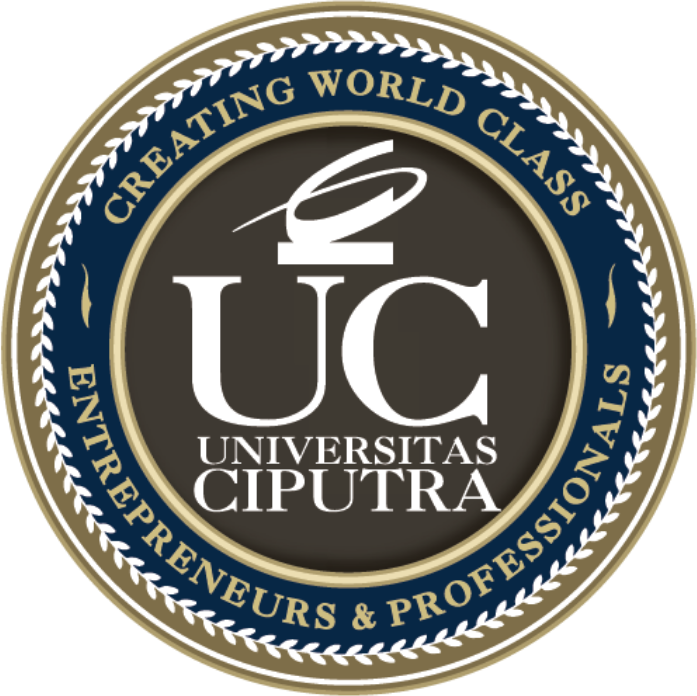
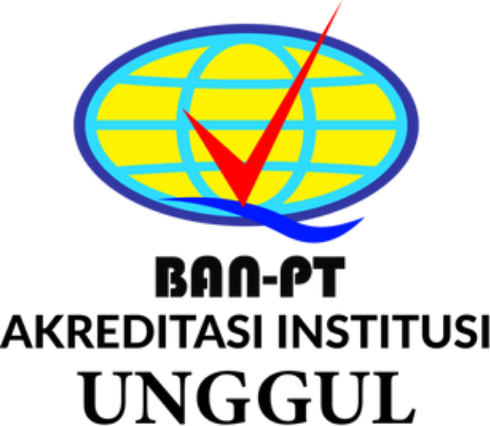
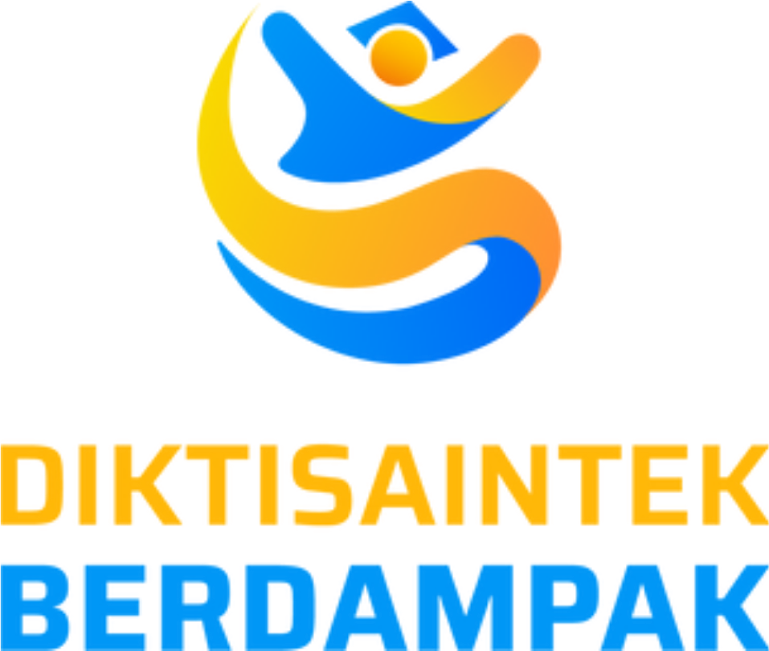
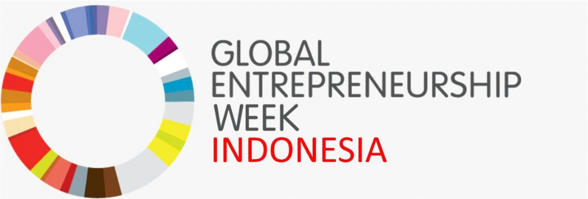
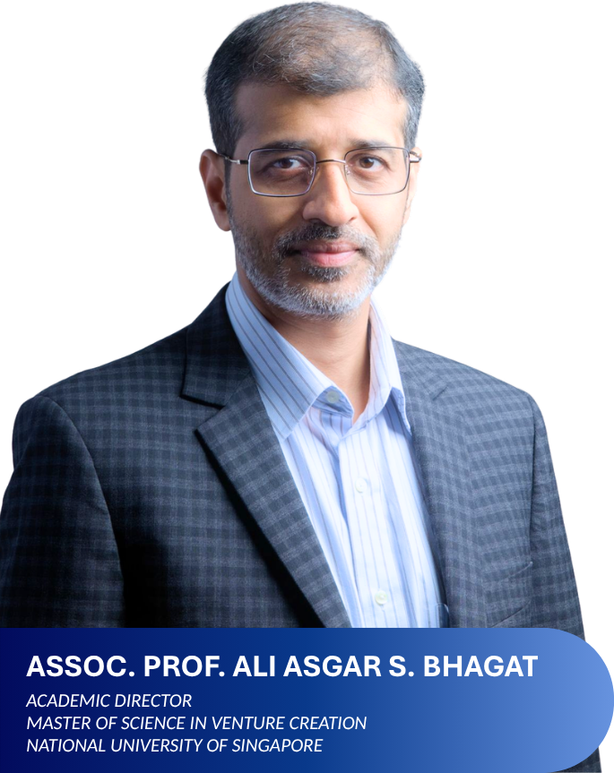
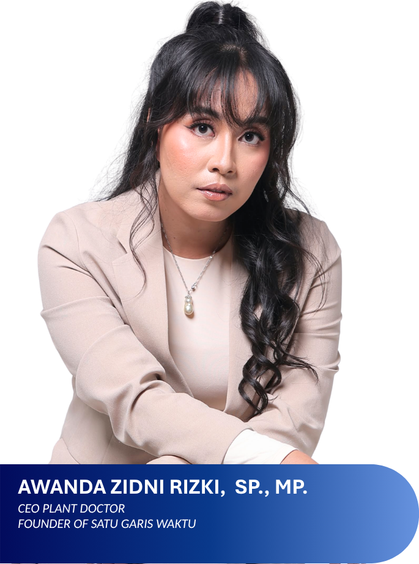
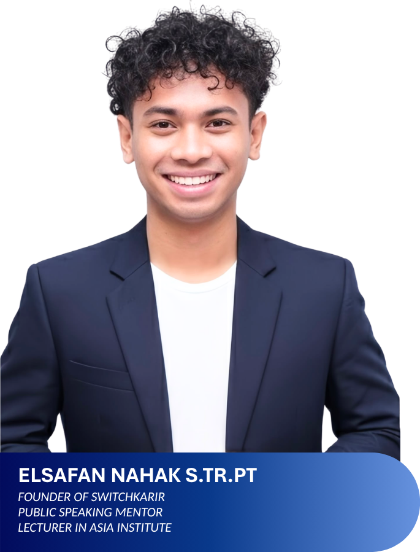
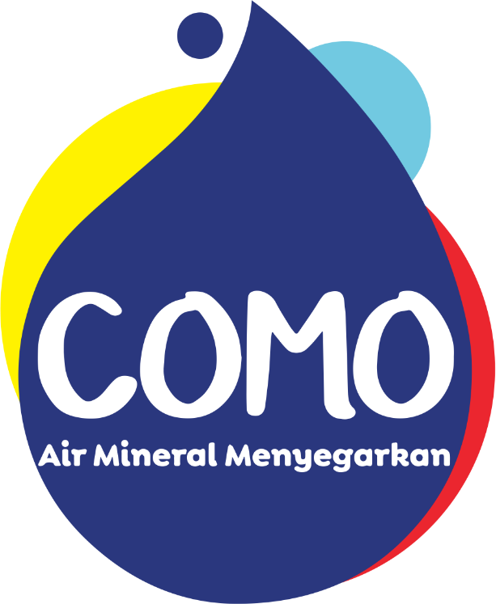
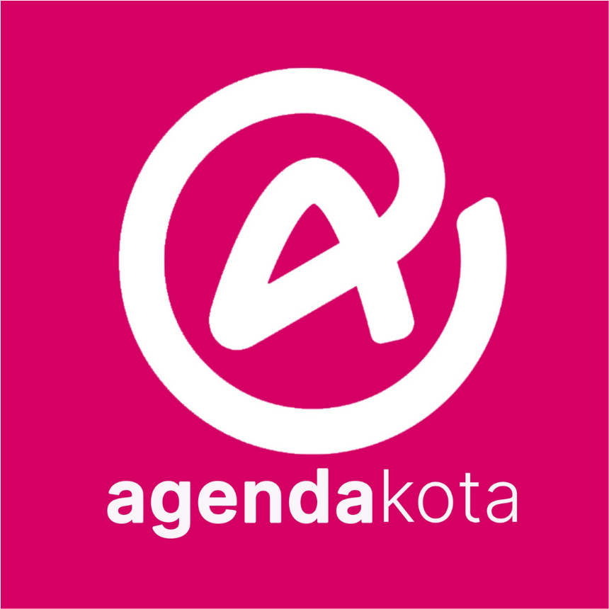

Entrepreneurship and Venture Creation Department
Universitas Ciputra
mempersembahkan:
UC GLOBAL ENTREPRENEURSHIP WEEK 2026
UC GLOBAL ENTREPRENEURSHIP WEEK 2026
Building Beyond Borders:
Entrepreneurship,
Technology & Connections
for a Sustainable Future
International Speaker

Speaker
Speaker



Speaker

18–20 NOV 2026
UNIVERSITAS CIPUTRA
Surabaya, Indonesia
Sponsored by

Media partner

UC GLOBAL ENTREPRENEURSHIP WEEK 2026
Building Beyond Borders: Entrepreneurship,
Technology & Connections for a Sustainable Future
Technology & Connections for a Sustainable Future
18–20 NOV 2026
UNIVERSITAS CIPUTRA
1 Day Pass 35K3 Days Pass 65K@uc_ejourneyucignite2026.vercel.app
SPONSORED BYMEDIA PARTNER